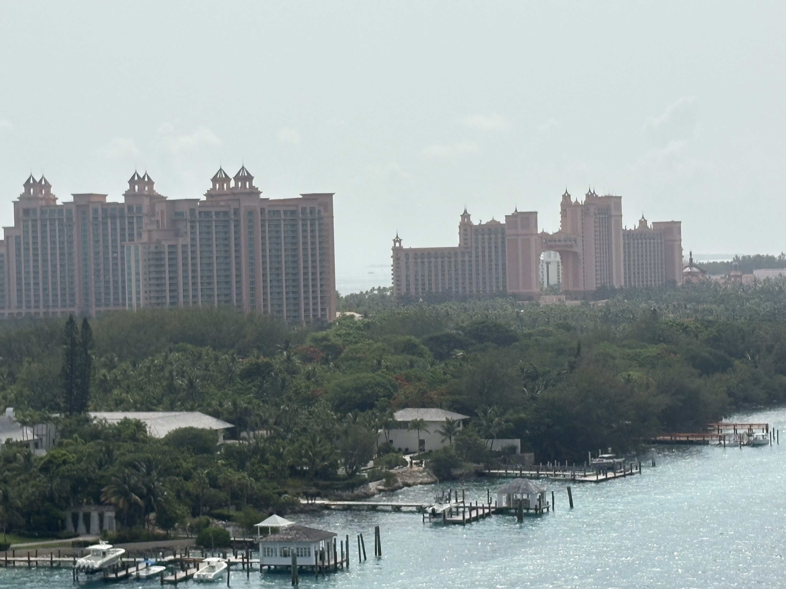
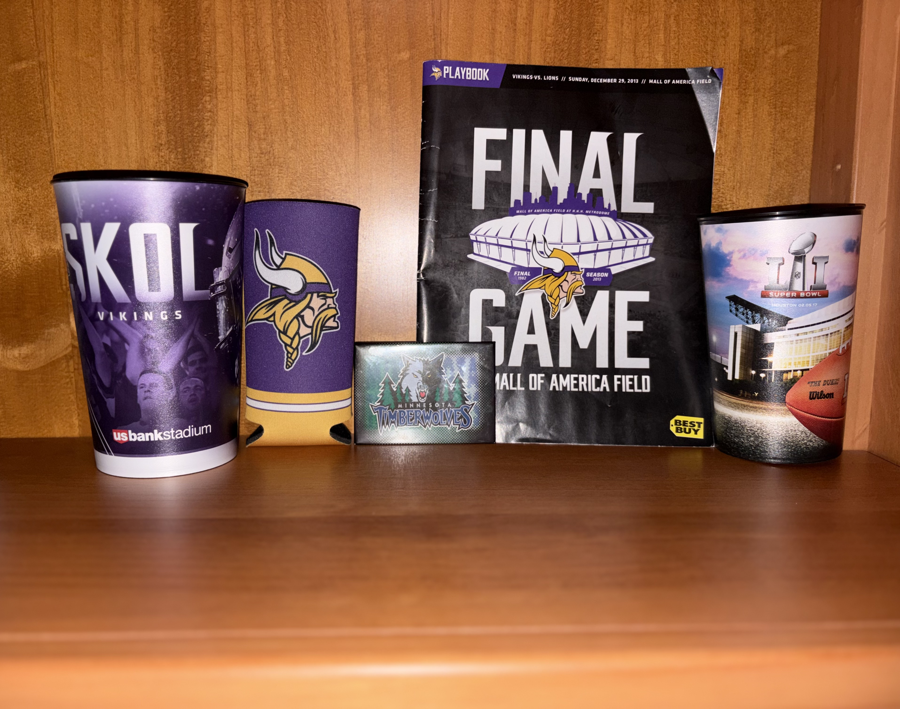
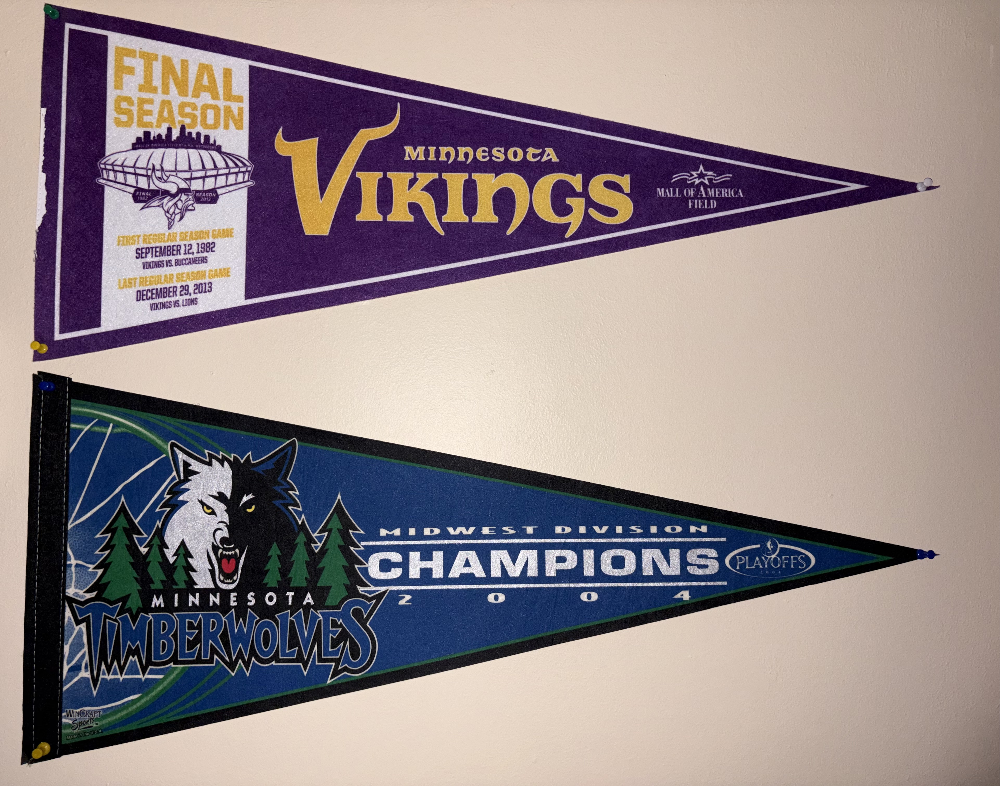
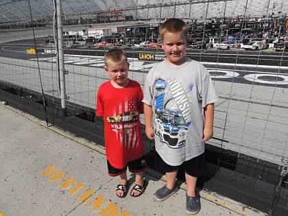
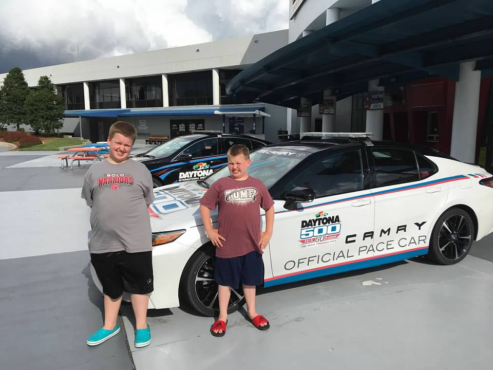

My Hobbies
My Travels



I love to travel around the country and the globe to see the majestic wonders each place has to offer. From beaches to mountains, to Washington DC and mountains, traveling to unique places is fulfilling. I get a taste of what life is like and the beauty of different places. I have been to 29 out of the 50 states and 3 countries outside of the United States. My travel goals are to visit all 50 states, Italy, France, and Asia.
One of my most memorable travel experiences was visiting the Grand Canyon, where the vastness and natural beauty left me speechless. The way the light changes throughout the day creates an ever-evolving masterpiece that photographs simply cannot capture. Each visit to a new destination teaches me something about different cultures, cuisines, and ways of life that I carry with me long after returning home.
Traveling has also taught me valuable life skills like adaptability, planning, and appreciation for the simple things. Whether it's trying new foods, learning basic phrases in different languages, or navigating unfamiliar transportation systems, each journey makes me more confident and open-minded. I believe that travel is one of the best investments you can make in yourself, as it broadens your perspective and creates lasting memories.
Sports




Ever since my adolescence, watching sports became a major part of my life. I love to cheer on the Vikings, Timberwolves, and other Minnesota sports teams. I also love to watch NASCAR races; I have been a Kyle Busch fan since I was eight years old. I have been to numerous NFL games, including the last Vikings game at the Metrodome, some games at US Bank Stadium, and a preseason game in Nashville. I have also been to a few NASCAR races in Bristol, Tennessee and Brooklyn, Michigan. I have also been outside of Daytona International Speedway, home of the Daytona 500.
The atmosphere at live sporting events is unlike anything else. The energy of the crowd, the anticipation of each play, and the shared excitement with thousands of other fans creates an unforgettable experience. Whether it's the roar of the crowd at a Vikings touchdown or the thunder of engines at a NASCAR race, being there in person adds a whole new dimension to watching sports that television simply cannot replicate.
Sports have taught me about perseverance, teamwork, and the importance of supporting your team through both victories and defeats. Following my favorite teams has given me a sense of community and belonging, connecting me with other fans who share the same passion. The memories I've made at these games and races will last a lifetime, and I look forward to creating many more as I continue to follow my favorite teams and drivers.